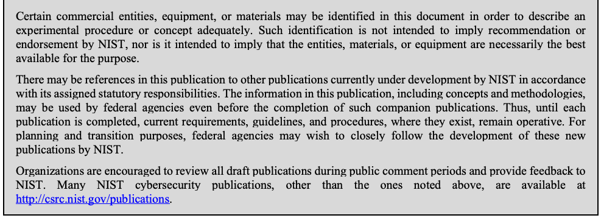
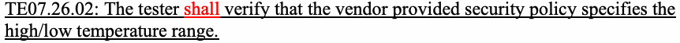

NIST SP 800-140 日本語訳
英語タイトル : FIPS 140-3 Derived Test Requirements (DTR): CMVP Validation Authority Updates to ISO/IEC 24759日本語タイトル : FIPS 140-3派生試験要件（DTR）
公開日 : 2020-03-20
原文URL : https://csrc.nist.gov/pubs/sp/800/140/final
翻訳編集 : 自動生成（有志による非公式の日本語訳）, 原文取得日 : 2026-09-30, 訳文 : 310 / 310 ブロック
[要約] SP 800-140 は、FIPS 140-3 の派生試験要件（DTR）について、ISO/IEC 24759 の試験証拠（TE）およびベンダー証拠（VE）の要件に対する変更を規定します。検証機関である暗号モジュール検証プログラム（CMVP）は、ISO/IEC 24759 の5.2項に従って TE や VE を変更、追加、削除でき、本書はそのセキュリティ要件ごとの内容を示します。本書は特定した要件のみを変更するため、ISO/IEC 24759 と併せて使用する必要があります。
NIST Special Publication 800-140
NIST 特別刊行物 800-140
FIPS 140-3
FIPS 140-3
Derived Test Requirements (DTR):
派生試験要件（DTR）：
CMVP Validation Authority Updates to ISO/IEC 24759
ISO/IEC 24759に対するCMVP検証機関の更新
Kim Schaffer
Kim Schaffer
This publication is available free of charge from: https://doi.org/10.6028/NIST.SP.800-140
本刊行物は次のURLから無料で入手できる：https://doi.org/10.6028/NIST.SP.800-140
I N F O R M A T I O N S E C U R I T Y
情 報 セ キ ュ リ テ ィ
NIST Special Publication 800-140
NIST 特別刊行物 800-140
FIPS 140-3
FIPS 140-3
Derived Test Requirements (DTR):
派生試験要件（DTR）：
CMVP Validation Authority Updates to ISO/IEC 24759
ISO/IEC 24759に対するCMVP検証機関の更新
Kim Schaffer
Kim Schaffer
Computer Security Division Information Technology Laboratory
コンピュータセキュリティ部 情報技術研究所
This publication is available free of charge from: https://doi.org/10.6028/NIST.SP.800-140
本刊行物は次のURLから無料で入手できる：https://doi.org/10.6028/NIST.SP.800-140
March 2020
2020年3月
［米国商務省の紋章。公的な標章のため、この非公式サイトには掲載していない。原本 PDF を参照。］
U.S. Department of Commerce Wilbur L. Ross, Jr., Secretary
米国商務省 Wilbur L. Ross, Jr. 長官
National Institute of Standards and Technology
米国国立標準技術研究所
Walter Copan, NIST Director and Under Secretary for Standards and Technology
Walter Copan、NIST所長兼標準技術担当商務次官
Authority
権限
This publication has been developed by NIST in accordance with its statutory responsibilities under the Federal Information Security Modernization Act (FISMA) of 2014, 44 U.S.C. § 3551 et seq., Public Law (P.L.) 113-283. NIST is responsible for developing information security standards and guidelines, including minimum requirements for federal information systems, but such standards and guidelines shall not apply to national security systems without the express approval of appropriate federal officials exercising policy authority over such systems. This guideline is consistent with the requirements of the Office of Management and Budget (OMB) Circular A-130.
本刊行物は、2014年連邦情報セキュリティ近代化法（FISMA）、44 U.S.C. § 3551 et seq.、公法（P.L.）113-283に基づく法定責務に従ってNISTが策定した。NISTは、連邦情報システムの最低要件を含む情報セキュリティ標準およびガイドラインを策定する責任を負う。ただし、これらの標準およびガイドラインは、国家安全保障システムに対する政策権限を行使する適切な連邦当局者の明示的な承認がない限り、当該システムに適用してはならない。本ガイドラインは、行政管理予算局（OMB）通達A-130の要件に整合している。
Nothing in this publication should be taken to contradict the standards and guidelines made mandatory and binding on federal agencies by the Secretary of Commerce under statutory authority. Nor should these guidelines be interpreted as altering or superseding the existing authorities of the Secretary of Commerce, Director of the OMB, or any other federal official. This publication may be used by nongovernmental organizations on a voluntary basis and is not subject to copyright in the United States. Attribution would, however, be appreciated by NIST.
本刊行物のいかなる記述も、法定権限に基づき商務長官が連邦機関に義務付け、拘束力を持たせた標準およびガイドラインに反するものと解釈すべきではない。また、本ガイドラインは、商務長官、OMB局長、その他の連邦当局者の既存の権限を変更または置き換えるものと解釈すべきではない。本刊行物は非政府組織が任意に利用でき、米国では著作権の対象ではない。ただし、NISTへの帰属表示を歓迎する。
National Institute of Standards and Technology Special Publication 800-140 Natl. Inst. Stand. Technol. Spec. Publ. 800-140, 23 pages (March 2020) CODEN: NSPUE2
国立標準技術研究所 特別刊行物800-140、Natl. Inst. Stand. Technol. Spec. Publ. 800-140、23ページ（2020年3月）、CODEN: NSPUE2
This publication is available free of charge from: https://doi.org/10.6028/NIST.SP.800-140
本刊行物は次のURLから無料で入手できる：https://doi.org/10.6028/NIST.SP.800-140
原本PDFの抜粋画像

Comments on this publication may be submitted to:
本刊行物へのコメントは、次の宛先に提出できる：
National Institute of Standards and Technology Attn: Computer Security Division, Information Technology Laboratory 100 Bureau Drive (Mail Stop 8930) Gaithersburg, MD 20899-8930 Email: sp800-140-comments@nist.gov
National Institute of Standards and Technology, Attn: Computer Security Division, Information Technology Laboratory, 100 Bureau Drive (Mail Stop 8930), Gaithersburg, MD 20899-8930, Email: sp800-140-comments@nist.gov
All comments are subject to release under the Freedom of Information Act (FOIA).
すべてのコメントは、情報公開法（FOIA）に基づく公開の対象となる。
Reports on Computer Systems Technology
コンピュータシステム技術に関する報告書
The Information Technology Laboratory (ITL) at the National Institute of Standards and Technology (NIST) promotes the U.S. economy and public welfare by providing technical leadership for the Nation’s measurement and standards infrastructure. ITL develops tests, test methods, reference data, proof of concept implementations, and technical analyses to advance the development and productive use of information technology. ITL’s responsibilities include the development of management, administrative, technical, and physical standards and guidelines for the cost-effective security and privacy of other than national security-related information in federal information systems. The Special Publication 800-series reports on ITL’s research, guidelines, and outreach efforts in information system security, and its collaborative activities with industry, government, and academic organizations.
国立標準技術研究所（NIST）の情報技術研究所（ITL）は、米国の計測および標準インフラに技術的なリーダーシップを提供することにより、米国経済と公共の福祉を促進する。ITLは、情報技術の発展と生産的な利用を推進するため、試験、試験方法、参照データ、概念実証実装、技術分析を開発する。ITLの責務には、連邦情報システムにおける国家安全保障関連以外の情報について、費用対効果の高いセキュリティとプライバシーを実現するための、管理的、事務的、技術的、物理的な標準およびガイドラインの策定が含まれる。特別刊行物800シリーズは、情報システムセキュリティに関するITLの研究、ガイドライン、普及活動、および産業界、政府、学術機関との協力活動を報告する。
Abstract
要約
NIST Special Publication (SP) 800-140 specifies the modifications of the Derived Test Requirements (DTR) for Federal Information Processing Standard (FIPS) 140-3. SP 800-140 modifies the test (TE) and vendor (VE) evidence requirements of International Organization for Standardization/International Electrotechnical Commission (ISO/IEC) 24759. As a validation authority, the Cryptographic Module Validation Program (CMVP) may modify, add or delete TEs and/or VEs as specified under paragraph 5.2 of ISO/IEC 24759. This NIST Special Publication should be used in conjunction with ISO/IEC 24759 as it modifies only those requirements identified in this document.
NIST特別刊行物（SP）800-140は、連邦情報処理標準（FIPS）140-3の派生試験要件（DTR）の変更を規定する。SP 800-140は、国際標準化機構／国際電気標準会議（ISO/IEC）24759の試験（TE）およびベンダー（VE）の証拠要件を変更する。検証機関として、暗号モジュール検証プログラム（CMVP）は、ISO/IEC 24759の5.2項に従ってTEおよび／またはVEを変更、追加、または削除できる。本NIST特別刊行物は、本書で特定する要件のみを変更するため、ISO/IEC 24759と併用すべきである。
Keywords
キーワード
Cryptographic Module Validation Program; CMVP; FIPS 140 testing; FIPS 140; ISO/IEC 19790; ISO/IEC 24759; testing requirement; vendor evidence.
暗号モジュール検証プログラム；CMVP；FIPS 140試験；FIPS 140；ISO/IEC 19790；ISO/IEC 24759；試験要件；ベンダー証拠。
Audience
対象読者
This document is focused toward the vendors, testing labs, and CMVP for the purpose of addressing CMVP specific requirements in ISO/IEC 24759, test requirements for cryptographic modules.
本書は、暗号モジュールの試験要件である ISO/IEC 24759におけるCMVP固有の要件に対処することを目的として、ベンダー、試験機関、CMVPを対象とする。
Table of Contents
目次
1 Scope
1 適用範囲
This document specifies the Cryptographic Module Validation Program (CMVP) modifications of the methods to be used by a Cryptographic and Security Testing Laboratory (CSTL) to demonstrate conformance. It also specifies the modification to the required documentation vendors are to provide to the testing laboratories as supporting evidence to demonstrate conformity. Unless otherwise specified in this document, the test requirements are specified in
本書は、暗号・セキュリティ試験機関（CSTL）が適合性を実証するために使用する方法について、暗号モジュール検証プログラム（CMVP）による変更を規定する。また、適合性を実証するための裏付け証拠としてベンダーが試験機関に提出しなければならない文書に対する変更も規定する。本書で別途規定しない限り、試験要件は次に規定されている：
ISO/IEC 24759.
ISO/IEC 24759。
2 Normative references
2 規範的参照
This section identifies the normative references cited as ISO/IEC 19790 and ISO/IEC 24759. The specific editions to be used are ISO/IEC 19790:2012 and ISO/IEC 24759:2017. Please note that the version 19790:2012 referenced here includes the corrections made in 2015.
この節では、ISO/IEC 19790および ISO/IEC 24759として引用する規範的参照を示す。使用する版は ISO/IEC 19790:2012 および ISO/IEC 24759:2017 である。ここで参照する 19790:2012 には、2015年に行われた正誤修正が含まれることに注意されたい。
Federal Information Processing Standard Publication (FIPS) 140-3, Security Requirements for Cryptographic Modules
連邦情報処理標準刊行物（FIPS）140-3『暗号モジュールのセキュリティ要件』
3 Terms and definitions
3 用語と定義
The following terms and definitions supersede or are in addition to those defined in ISO/IEC 19790 and ISO/IEC 24759:
以下の用語と定義は、ISO/IEC 19790および ISO/IEC 24759で定義されているものに優先するか、これらに追加される。
None at this time
現時点ではなし
4 Symbols and abbreviated terms
4 記号および略語
The following symbols and abbreviated terms supersede or are in addition to ISO/IEC 19790 and ISO/IEC 24759 symbols and abbreviated terms:
以下の記号および略語は、ISO/IEC 19790および ISO/IEC 24759の記号・略語に優先するか、これらに追加される。
CMVP Cryptographic Module Validation Program
CMVP 暗号モジュール検証プログラム
CSD
CSD
Computer Security Division
コンピュータセキュリティ部
CCCS
CCCS
Canadian Centre for Cyber Security
カナダ・サイバーセキュリティセンター
CSTL
CSTL
Cryptographic and Security Testing Laboratory
暗号・セキュリティ試験機関
CVE
CVE
Common Vulnerabilities and Exposures
共通脆弱性識別子（Common Vulnerabilities and Exposures）
FIPS
FIPS
Federal Information Processing Standard
連邦情報処理標準
FISMA Federal Information Security Management/Modernization Act
FISMA 連邦情報セキュリティ管理法／近代化法
NIST
NIST
National Institute of Standards and Technology
国立標準技術研究所
SP 800-XXX NIST Special Publication 800 series document
SP 800-XXX NIST特別刊行物800シリーズの文書
5 Document organization
5 文書の構成
5.1 General
5.1 一般
Section 6 of this document specifies any modifications to the requirements for information that vendors shall provide to testing laboratories and the requirements for testing that shall be used by testing laboratories. Following the format of ISO/IEC 24759, Section 6 includes a general area of security, followed by eleven specific areas of security.
本書の6節では、ベンダーが試験機関に提供しなければならない情報の要件、および試験機関が使用しなければならない試験の要件に対する変更を規定する。ISO/IEC 24759の形式に従い、6節ではセキュリティの一般領域に続いて、11の具体的なセキュリティ領域を扱う。
Each Annex is addressed in a similarly labeled SP 800-140X, such that
各附属書は、同じラベルのSP 800-140Xで扱う。具体的には、
Annex A – Documentation requirements is addressed in SP 800-140A.
附属書A - 文書化要件は SP 800-140Aで扱う。
Annex B – Cryptographic module security policy is addressed in SP 800-140B.
附属書B - 暗号モジュールのセキュリティポリシーは SP 800-140Bで扱う。
Annex C - Approved security functions is addressed in SP 800-140C.
附属書C - 承認済みセキュリティ機能は SP 800-140Cで扱う。
Annex D – Approved sensitive parameter generation and establishment methods is addressed in SP 800-140D.
附属書D - 承認済みの機微パラメータ生成および確立方法は、SP 800-140Dで扱う。
Annex E – Approved authentication mechanisms is addressed in SP 800-140E.
附属書E - 承認済み認証メカニズムは SP 800-140Eで扱う。
Annex F – Approved non-invasive attack mitigation test metrics is addressed in SP 800-140F.
附属書F - 承認済み非侵襲的攻撃緩和試験メトリクスは、SP 800-140Fで扱う。
5.2 Modifications
5.2 変更
Modifications will follow a similar format as in ISO/IEC 24759. For additions to test requirements, new Test Evidence (TEs) or Vendor Evidence (VEs) will be listed by increasing the “sequence_number.” Modifications can include a combination of additions using underline and deletions using strikethrough. If no changes are required, the paragraph will indicate “No change.”
変更は ISO/IEC 24759と同様の形式に従う。試験要件を追加する場合、新しい試験証拠（TE）またはベンダー証拠（VE）は「sequence_number」を増やして列挙する。変更には、下線による追加と取り消し線による削除の組み合わせを含めることができる。変更が不要な場合、その段落には「変更なし」と記載する。
6 Security requirements
6 セキュリティ要件
In responding to test evidence (TE), a yes/no answer does not provide sufficient assurance. CMVP requires the following information when responding to a documentation, operational testing, or verify/verify by inspection requirement.
試験証拠（TE）への回答として「はい／いいえ」だけでは十分な保証を提供しない。CMVPは、文書確認、運用試験、または検証／目視検査による検証の要件に回答する際、以下の情報を要求する。
Documentation:
文書確認：
Reference/cite the applicable vendor documentation and summarize the contents per the
該当するベンダー文書を参照／引用し、その内容を次に従って要約する：
TE.
TE。
Operational Testing:
運用試験：
Describe the test method and tools, and summarize the results, per the TE.
TEに従い、試験方法およびツールを説明し、結果を要約する。
Verify or Verify by Inspection:
検証または目視検査による検証：
Describe the test or inspection method used to verify the requirement and provide detailed results of the test or inspection, per the TE.
TEに従い、要件を検証するために使用した試験または検査の方法を説明し、その試験または検査の詳細な結果を提示する。
6.1 General
6.1 一般
No change.
変更なし。
6.2 Cryptographic module specification
6.2 暗号モジュールの仕様
AS02.15: (Specification – Levels 1, 2, 3, and 4)
AS02.15：（仕様 - レベル1、2、3、4）
The cryptographic boundary of a hardware cryptographic module shall delimit and identify:
ハードウェア暗号モジュールの暗号境界は、次を画定し、識別しなければならない（shall）。
- The set of hardware components which may include:
- 次を含むことがあるハードウェア構成要素の集合：
- physical structures, including circuit boards, substrates or other mounting surfaces that provide the interconnecting physical wiring between components, - active electrical components such as semi-integrated, custom-integrated or common-integrated circuits, processors, memory, power supplies, converters, etc. - physical structures, such as enclosures, potting or encapsulation materials, connectors, and interfaces, - firmware, which may include an operating system, - other components types not listed above.
- 構成要素間を物理的に相互接続する配線を提供する回路基板、基板、その他の実装面などの物理構造、- セミ集積回路、カスタム集積回路、または共通集積回路、プロセッサ、メモリ、電源、コンバーターなどの能動電気部品、- エンクロージャ、ポッティング材またはカプセル化材、コネクタ、インターフェースなどの物理構造、- オペレーティングシステムを含むことがあるファームウェア、- 上記に挙げていないその他の種類の構成要素。
Required Vendor Information
ベンダーに要求される情報
VE02.15.05 For each processor in the module, the vendor shall identify, by major services, the software or firmware that are executed by the processor, and the memory devices that contain the executable code and data.
VE02.15.05 モジュール内の各プロセッサについて、ベンダーは主要なサービスごとに、そのプロセッサで実行されるソフトウェアまたはファームウェアと、実行可能コードおよびデータを格納するメモリデバイスを特定しなければならない（shall）。
VE02.15.06 For each processor, the vendor shall identify any hardware with which the processor interfaces.
VE02.15.06 各プロセッサについて、ベンダーはそのプロセッサが接続するハードウェアを特定しなければならない（shall）。
Required Test Procedures
要求される試験手順
TE02.15.10 The tester shall verify the documentation provided under assertion AS02.02, with a focus on the block diagram depicting all of the major hardware components of a cryptographic module and component interconnections, including any microprocessors, input/output buffers, plaintext/ciphertext buffers, control buffers, key storage, working memory, and program memory.
TE02.15.10 試験者は、アサーション AS02.02に基づき提供された文書を検証しなければならない（shall）。特に、マイクロプロセッサ、入出力バッファ、平文／暗号文バッファ、制御バッファ、鍵ストレージ、作業メモリ、プログラムメモリを含む、暗号モジュールの主要なハードウェア構成要素すべてと、構成要素間の相互接続を示すブロック図に注目する。
TE02.15.11 The tester shall verify that the block diagram indicates all significant interconnections and data flow among major components of the module, and between the module and outside equipment. In particular, each line on the block diagram indicating an interconnection must be labeled with the type of information it transmits.
TE02.15.11 試験者は、ブロック図に、モジュールの主要構成要素間、およびモジュールと外部装置との間の重要な相互接続とデータフローがすべて示されていることを検証しなければならない（shall）。特に、相互接続を示すすべての線には、伝送する情報の種類をラベル付けしなければならない（must）。
TE02.15.12 The tester shall verify that the block diagram indicates the cryptographic boundary for the cryptographic module, as required under this assertion.
TE02.15.12 試験者は、このアサーションで求められているとおり、ブロック図に暗号モジュールの暗号境界が示されていることを検証しなければならない（shall）。
TE02.15.13 The tester shall verify that, for each processor, the vendor has identified the software or firmware code modules executed by that processor, the services performed by that processor and associated code, and the memory devices containing the executable code and data.
TE02.15.13 試験者は、各プロセッサについて、ベンダーがそのプロセッサで実行されるソフトウェアまたはファームウェアのコードモジュール、そのプロセッサおよび関連コードが実行するサービス、ならびに実行可能コードとデータを格納するメモリデバイスを特定していることを検証しなければならない（shall）。
TE02.15.14 The tester shall verify that, for each processor, the vendor has identified any hardware with which the processor interfaces. This must include, as applicable, any hardware components that provide input, control, or status data to the processor and associated software/firmware, and any hardware components that receive output, control, or status data from the processor and associated software/firmware. Such hardware components may be within the cryptographic module or may be user equipment outside the module such as input/output devices.
TE02.15.14 試験者は、各プロセッサについて、ベンダーがそのプロセッサの接続先ハードウェアを特定していることを検証しなければならない（shall）。これには、該当する場合、プロセッサおよび関連ソフトウェア／ファームウェアに入力、制御、または状態データを提供するハードウェア構成要素と、プロセッサおよび関連ソフトウェア／ファームウェアから出力、制御、または状態データを受け取るハードウェア構成要素を含めなければならない（must）。このようなハードウェア構成要素は、暗号モジュール内にあっても、入出力デバイスなどモジュール外のユーザー機器であってもよい。
AS02.17: (Specification – Levels 1, 2, 3, and 4)
AS02.17：（仕様 - レベル1、2、3、4）
The cryptographic boundary of a firmware cryptographic module shall delimit and identify:
ファームウェア暗号モジュールの暗号境界は、次を画定し、識別しなければならない（shall）。
- The set of executable file or files that constitute the cryptographic module; and - The instantiation of the cryptographic module saved in memory and executed by one or more processors.
- 暗号モジュールを構成する実行可能ファイル一式、および - メモリに保存され、1つ以上のプロセッサで実行される暗号モジュールのインスタンス。
Required Vendor Information
ベンダーに要求される情報
VE02.17.04 For each processor in the computing platform of the operational environment bound to the firmware module, the vendor shall identify, by major services, the firmware that is executed by the processor, and the memory devices that contain the executable code and data.
VE02.17.04 ファームウェアモジュールに結び付けられた運用環境のコンピューティングプラットフォーム内の各プロセッサについて、ベンダーは主要なサービスごとに、そのプロセッサで実行されるファームウェアと、実行可能コードおよびデータを格納するメモリデバイスを特定しなければならない（shall）。
VE02.17.05 For each processor in the computing platform of the operational environment bound to the firmware module, the vendor shall identify any hardware with which the processor interfaces.
VE02.17.05 ファームウェアモジュールに結び付けられた運用環境のコンピューティングプラットフォーム内の各プロセッサについて、ベンダーはそのプロセッサの接続先ハードウェアを特定しなければならない（shall）。
Required Test Procedures
要求される試験手順
TE02.17.06 The tester shall verify the documentation provided under assertion AS02.02, with a focus on the block diagram depicting all of the major hardware components of a cryptographic module and component interconnections, including any microprocessors, input/output buffers, plaintext/ciphertext buffers, control buffers, key storage, working memory, and program memory.
TE02.17.06 試験者は、アサーション AS02.02に基づき提供された文書を検証しなければならない（shall）。その際、マイクロプロセッサ、入出力バッファ、平文／暗号文バッファ、制御バッファ、鍵ストレージ、作業メモリ、プログラムメモリを含む、暗号モジュールの主要なハードウェア構成要素すべてと、構成要素間の相互接続を示すブロック図に重点を置く。
TE02.17.07 The tester shall verify that the block diagram indicates all significant interconnections and data flows among major components of the module, and between the module and outside equipment. In particular, each line on the block diagram indicating an interconnection must be labeled with the type of information it transmits.
TE02.17.07 試験者は、ブロック図に、モジュールの主要構成要素間、およびモジュールと外部装置との間の重要な相互接続とデータフローがすべて示されていることを検証しなければならない（shall）。特に、相互接続を示すすべての線には、伝送する情報の種類をラベル付けしなければならない（must）。
TE02.17.08 The tester shall verify that the block diagram indicates the cryptographic boundary for the cryptographic module, as required under this assertion.
TE02.17.08 試験者は、このアサーションで求められているとおり、ブロック図に暗号モジュールの暗号境界が示されていることを検証しなければならない（shall）。
TE02.17.09 The tester shall verify that, for each processor in the computing platform of the operational environment bound to the firmware module, the vendor has identified the firmware code modules executed by that processor, the services performed by that processor and associated code, and the memory devices containing the executable code and data.
TE02.17.09 試験者は、ファームウェアモジュールに結び付けられた運用環境のコンピューティングプラットフォーム内の各プロセッサについて、ベンダーがそのプロセッサで実行されるファームウェアのコードモジュール、そのプロセッサおよび関連コードが実行するサービス、ならびに実行可能コードとデータを格納するメモリデバイスを特定していることを検証しなければならない（shall）。
TE02.17.10 The tester shall verify that, for each processor in the computing platform of the operational environment bound to the firmware module, the vendor has identified any hardware with which the processor interfaces. This must include, as applicable, any hardware components that provide input, control, or status data to the processor and associated firmware, and any hardware components that receive output, control, or status data from the processor and associated firmware. Such hardware components may be within the cryptographic module or may be user equipment outside the module such as input/output devices.
TE02.17.10 試験者は、ファームウェアモジュールに結び付けられた運用環境のコンピューティングプラットフォーム内の各プロセッサについて、ベンダーがそのプロセッサの接続先ハードウェアを特定していることを検証しなければならない（shall）。これには、該当する場合、プロセッサおよび関連ファームウェアに入力、制御、または状態データを提供するハードウェア構成要素と、プロセッサおよび関連ファームウェアから出力、制御、または状態データを受け取るハードウェア構成要素を含めなければならない（must）。このようなハードウェア構成要素は、暗号モジュール内にあっても、入出力デバイスなどモジュール外のユーザー機器であってもよい。
AS02.18: (Specification – Levels 1, 2, 3, and 4)
AS02.18：（仕様 - レベル1、2、3、4）
The cryptographic boundary of a hybrid cryptographic module shall:
ハイブリッド暗号モジュールの暗号境界は、次を満たさなければならない（shall）。
- be the composite of the module’s hardware component boundary and the disjoint software or firmware component(s) boundary; and - include the collection of all ports and interfaces from each component.
- モジュールのハードウェア構成要素の境界と、分離されたソフトウェアまたはファームウェア構成要素の境界との複合体であること；および - 各構成要素のすべてのポートとインターフェースの集合を含むこと。
NOTE In addition to the disjoint software or firmware component(s), the hardware component can also include embedded software or firmware.
注：分離されたソフトウェアまたはファームウェア構成要素に加え、ハードウェア構成要素に組み込みソフトウェアまたはファームウェアを含めることもできる。
Required Vendor Information
ベンダーに要求される情報
VE02.18.01: The cryptographic module shall be identified in the vendor documentation as either a Hybrid Software Module or a Hybrid Firmware Module.
VE02.18.01：ベンダー文書では、暗号モジュールをハイブリッドソフトウェアモジュールまたはハイブリッドファームウェアモジュールのいずれかとして識別しなければならない（shall）。
a) For Hybrid Software Module components, the vendor documentation shall provide information required under VE02.15.01 through VE02.15.04 VE02.15.06 and VE02.16.01 through VE02.16.03. b) For Hybrid Firmware Module components, the vendor documentation shall provide information required under VE02.15.01 through VE02.15.04 VE02.15.06 and VE02.17.01 through VE02.17.03 VE02.17.05.
a) ハイブリッドソフトウェアモジュールの構成要素について、ベンダー文書には VE02.15.01～VE02.15.04 VE02.15.06、および VE02.16.01～VE02.16.03で要求される情報を記載しなければならない（shall）。b) ハイブリッドファームウェアモジュールの構成要素について、ベンダー文書には VE02.15.01～VE02.15.04 VE02.15.06、および VE02.17.01～VE02.17.03 VE02.17.05で要求される情報を記載しなければならない（shall）。
Required Test Procedures
要求される試験手順
TE02.18.01: The tester shall verify that the documentation identifies the module as either a Hybrid Software Module or a Hybrid Firmware Module.
TE02.18.01：試験者は、文書でモジュールがハイブリッドソフトウェアモジュールまたはハイブリッドファームウェアモジュールのいずれかとして識別されていることを検証しなければならない（shall）。
a) For Hybrid Software Module components, the tester shall follow procedures required under TE02.15.01 through TE02.15.09 TE02.15.14 and TE02.16.01 through TE02.16.05. b) For Hybrid Firmware Module components, the tester shall follow procedures required under TE02.15.01 through TE02.15.09 TE02.15.14 and TE02.17.01 through TE02.17.05 TE02.17.10.
a) ハイブリッドソフトウェアモジュールの構成要素について、試験者は TE02.15.01～TE02.15.09 TE02.15.14、および TE02.16.01～TE02.16.05で求められる手順に従わなければならない（shall）。b) ハイブリッドファームウェアモジュールの構成要素について、試験者は TE02.15.01～TE02.15.09 TE02.15.14、および TE02.17.01～TE02.17.05 TE02.17.10で求められる手順に従わなければならない（shall）。
AS02.20: (Specification – Levels 1, 2, 3, and 4)
AS02.20：（仕様 - レベル1、2、3、4）
An approved mode of operation shall be defined as the set of services which include at least one service that utilises an approved cryptographic algorithm, security function or process and those services or processes specified in {ISO/IEC 19790:2012/Cor.1:2015 subclause} 7.4.3.
承認済み動作モードは、承認済みの暗号アルゴリズム、セキュリティ機能、またはプロセスを利用するサービスを少なくとも1つ含み、かつ{ISO/IEC 19790:2012/Cor.1:2015 細分箇条} 7.4.3に規定されるサービスまたはプロセスを含む、サービスの集合として定義しなければならない（shall）。
Required Vendor Information
ベンダーに要求される情報
VE02.20.03 The vendor shall provide a list of all vendor affirmed security methods.
VE02.20.03 ベンダーは、ベンダー確認済みセキュリティ方式をすべて列挙しなければならない（shall）。
VE02.20.04 The vendor provided non-proprietary security policy shall include a list of all vendor affirmed security methods.
VE02.20.04 ベンダーが提供する非プロプライエタリなセキュリティポリシーには、ベンダー確認済みセキュリティ方式をすべて列挙しなければならない（shall）。
Required Test Procedures
要求される試験手順
TE02.20.03 The tester shall verify that the vendor has provided the list of vendor affirmed security methods as described above.
TE02.20.03 試験者は、上記の説明どおりにベンダーがベンダー確認済みセキュリティ方式の一覧を提供したことを検証しなければならない（shall）。
TE02.20.04 The tester shall verify that the vendor provided documentation specifies how the implemented vendor affirmed security methods conform to the relevant standards.
TE02.20.04 試験者は、実装されたベンダー確認済みセキュリティ方式が関連標準にどのように適合するかを、ベンダーが提供した文書が規定していることを検証しなければならない（shall）。
6.3 Cryptographic module interfaces
6.3 暗号モジュールのインターフェース
AS03.07: (Data output interface – Levels 1, 2, 3, and 4)
AS03.07：（データ出力インターフェース - レベル1、2、3、4）
All data output via the “data output” interface shall be inhibited while performing manual entry, pre-operational self-tests, software/firmware loading and zeroisation; or when the cryptographic module is in an error state.
「データ出力」インターフェースを介するすべてのデータ出力は、手動入力、運用前自己試験、ソフトウェア／ファームウェアのロード、ゼロ化の実行中、または暗号モジュールがエラー状態にある場合に抑止しなければならない（shall）。
Required Vendor Information
ベンダーに要求される情報
VE03.07.03: The vendor documentation shall specify how the physical and logical paths used by all major categories of output data exiting the cryptographic module are logically or physically disconnected from the processes performing SSP generation, manual SSP entry, and zeroisation of SSPs.
VE03.07.03：暗号モジュールから出力される主要な出力データ区分すべてに用いられる物理パスおよび論理パスが、SSPの生成、SSPの手動入力、およびSSPのゼロ化を行うプロセスから論理的または物理的にどのように切り離されるかを、ベンダー文書に明記しなければならない（shall）。
VE03.07.04: If the physical and logical paths followed by the output data and SSP information are physically shared, the vendor documentation shall specify how the cryptographic module enforces logical separation of the output data and SSP information.
VE03.07.04：出力データおよびSSP情報がたどる物理パスと論理パスが物理的に共有されている場合、暗号モジュールが出力データとSSP情報の論理的分離をどのように強制するかを、ベンダー文書に明記しなければならない（shall）。
VE03.07.05: The vendor documentation shall specify how the cryptographic module does not allow the specified SSP processes to pass SSP information to the output data path, and does not allow output data exiting the module to interfere with the SSP processes.
VE03.07.05：指定されたSSP処理がSSP情報を出力データパスに渡すことを暗号モジュールがどのようにして許さないか、およびモジュールから出る出力データがSSP処理に干渉することをどのようにして許さないかを、ベンダー文書に明記しなければならない（shall）。
Required Test Procedures
必須試験手順
TE03.07.06: The tester shall verify that the vendor documentation specifies how the physical and logical paths used by all major categories of output data exiting the cryptographic module are logically or physically disconnected from the processes performing SSP generation, manual SSP entry, and zeroisation of SSPs.
TE03.07.06：暗号モジュールから出力される主要な出力データ区分すべてに用いられる物理パスおよび論理パスが、SSPの生成、SSPの手動入力、およびSSPのゼロ化を行うプロセスから論理的または物理的に切り離される方法をベンダー文書に記載していることを、試験者は検証しなければならない。
TE03.07.07: If the physical and logical paths followed by the output data and SSP information are physically shared, the tester shall verify that the vendor documentation specifies how the cryptographic module enforces logical separation of the output data and SSP information.
TE03.07.07：出力データおよびSSP情報がたどる物理パスと論理パスが物理的に共有される場合、暗号モジュールが出力データとSSP情報の論理的分離をどのように強制するかをベンダー文書が明記していることを、試験者は検証しなければならない。
TE03.07.08: The tester shall verify that the output data path is logically or physically disconnected from the processes performing SSP generation, manual SSP entry, and zeroisation of SSPs.
TE03.07.08：出力データパスが、SSPの生成、SSPの手動入力、およびSSPのゼロ化を行うプロセスから論理的または物理的に切り離されていることを、試験者は検証しなければならない。
6.4 Roles, services, and authentication
6.4 役割、サービス、および認証
AS04.44: (Operator authentication – Levels 1, 2, 3, and 4)
AS04.44：（オペレーター認証－レベル1、2、3、4）
Authentication data within a cryptographic module shall be protected against unauthorised use, disclosure, modification, and substitution.
暗号モジュール内の認証データは、不正な使用、開示、変更、および置換から保護されなければならない。
NOTE Approved security functions can be used as part of the authentication mechanism.
注：承認済みセキュリティ機能を認証メカニズムの一部として使用できる。
Required Vendor Information
必須ベンダー情報
VE04.44.01: The vendor documentation shall describe the protection of all authentication data within the module. Protection shall include the implementation of mechanisms that protect against unauthorised use, disclosure, modification, and substitution.
VE04.44.01：モジュール内のすべての認証データの保護について、ベンダー文書に記述しなければならない。この保護には、不正な使用、開示、変更、および置換を防止するメカニズムの実装を含めなければならない。
Required Test Procedures
必須試験手順
TE04.44.01: The tester shall verify the vendor documentation that describes the protection of authentication data. The tester shall verify that the documentation describes how the data will be protected against unauthorised use, disclosure, modification, and substitution.
TE04.44.01：認証データの保護について記載したベンダー文書を、試験者は検証しなければならない。データを不正な使用、開示、変更、および置換からどのように保護するかが文書に記載されていることを、試験者は検証しなければならない。
AS04.45: (Operator authentication – Levels 2, 3, and 4)
AS04.45：（オペレーター認証－レベル2、3、4）
If a cryptographic module does not contain the authentication data required to authenticate the operator for the first time the module is accessed, then other authorised methods (e.g. procedural controls or use of factory-set or default authentication data) shall be used to control access to the module and initialise the authentication mechanisms.
暗号モジュールに初回アクセスするオペレーターを認証するために必要な認証データをモジュールが保持しない場合、モジュールへのアクセスを制御し、認証メカニズムを初期化するために、その他の認可された方法（例：手順による管理、工場設定または既定の認証データの使用）を用いなければならない。
Required Test Procedures
必須試験手順
TE04.45.02: If access to the module before initialisation is procedurally controlled, the tester shall initiate an error on an uninitialised module and shall verify that the module denies access. The tester shall assume the authorised role and verify that the required authentication complies with the documented procedures. The tester shall attempt to assume other roles before the module has been initialised and verify that the module denies access to the roles.
TE04.45.02：初期化前のモジュールへのアクセスが手順によって制御される場合、試験者は未初期化のモジュールでエラーを発生させ、モジュールがアクセスを拒否することを検証しなければならない。試験者は認可された役割を引き受け、必要な認証が文書化された手順に従っていることを検証しなければならない。モジュールの初期化前に他の役割を引き受けようとし、モジュールがそれらの役割へのアクセスを拒否することを検証しなければならない。
AS04.54: (Operator authentication — Levels 2, 3, and 4)
AS04.54：（オペレーター認証－レベル2、3、4）
Feedback of authentication data to an operator shall be obscured during authentication to anyone other than the operator. (e.g. no visible display of characters when entering a password).
オペレーターへの認証データのフィードバックは、認証中、当該オペレーター以外の者に対して見えないようにしなければならない。（例：パスワード入力時に文字を可視表示しない）。
Required Vendor Information
必須ベンダー情報
VE04.54.01: The vendor documentation shall specify the method used to obscure feedback of the authentication data to an operator during entry of the authentication data.
VE04.54.01：認証データの入力中に、オペレーターへの認証データのフィードバックを見えなくするために用いる方法を、ベンダー文書に明記しなければならない。
VE04.54.02: The vendor documentation shall specify how, if implemented, the vendor allows an operator to confirm authentication data at the time of entry, while obscuring any useful information to all others.
VE04.54.02：実装する場合、他のすべての者に対してはいかなる有用な情報も見えないようにしつつ、入力時にオペレーターが認証データを確認できるようベンダーがどのように実現するかを、ベンダー文書に明記しなければならない。
Required Test Procedures
必須試験手順
TE04.54.01: The tester shall verify from the vendor documentation that the authentication data is obscured during data entry.
TE04.54.01：認証データ入力中に当該データが見えないようにされることを、ベンダー文書から試験者は検証しなければならない。
TE04.54.02: The tester shall enter authentication data and verify that there is no access of authentication data during data entry, except, as an option, to the operator.
TE04.54.02：試験者は認証データを入力し、オプションとしてオペレーターだけがアクセスできる場合を除き、入力中に認証データへアクセスできないことを検証しなければならない。
TE04.54.03: If the vendor allows an operator to confirm authentication data at the time of entry, the tester shall verify that this information is obscured from other entities.
TE04.54.03：ベンダーが入力時にオペレーターによる認証データの確認を許可する場合、その情報が他の主体から見えないようにされることを試験者は検証しなければならない。
6.5 Software/Firmware security
6.5 ソフトウェア／ファームウェアのセキュリティ
No change.
変更なし。
6.6 Operational environment
6.6 運用環境
AS06.11: (Operational environment – Level 2)
AS06.11：（運用環境－レベル2）
The operating system shall be configured to protect against unauthorised execution, unauthorised modification, and unauthorised reading of SSPs, control and status data.
オペレーティングシステムは、SSP、制御データ、および状態データの不正な実行、不正な変更、および不正な読み取りを防ぐよう構成されなければならない。
Required Vendor Information
必須ベンダー情報
VE06.11.01: The vendor shall provide operating system documentation which provides a description of the operating system control mechanisms which can be configured to protect against unauthorised execution, unauthorised modification, and unauthorised reading of SSPs, control and status data.
VE06.11.01：SSP、制御データ、および状態データの不正な実行、不正な変更、および不正な読み取りを防ぐよう構成できるオペレーティングシステムの制御メカニズムについて説明したオペレーティングシステム文書を、ベンダーは提供しなければならない。
Required Test Procedures
必須試験手順
TE06.11.01: The tester shall verify that the vendor documentation, and by inspection of operating system control mechanisms, that the operating system can be configured to protect against unauthorised execution, unauthorised modification, and unauthorised reading of SSPs, control and status data.
TE06.11.01：SSP、制御データ、および状態データの不正な実行、不正な変更、および不正な読み取りを防ぐようオペレーティングシステムを構成できることを、ベンダー文書およびオペレーティングシステムの制御メカニズムの検査によって、試験者は検証しなければならない。
TE06.11.02: The tester shall configure the operating system to protect against unauthorised execution, unauthorised modification, and unauthorised reading of SSPs, control and status data. During execution of a cryptographic process, the tester shall attempt to execute, modify or read SSPs, control or status data which the tester has authorised access.
TE06.11.02：試験者は、SSP、制御データ、および状態データの不正な実行、不正な変更、および不正な読み取りを防ぐようオペレーティングシステムを構成しなければならない。暗号処理の実行中に、試験者は、自身がアクセスを認可されているSSP、制御データ、または状態データの実行、変更、または読み取りを試みなければならない。
TE06.11.03: The tester shall configure the operating system to protect against unauthorised execution, unauthorised modification, and unauthorised reading of SSPs, control and status data. During execution of a cryptographic process, the tester shall attempt to execute, modify or read SSPs, control or status data which the tester has unauthorised access.
TE06.11.03：試験者は、SSP、制御データ、および状態データの不正な実行、不正な変更、および不正な読み取りを防ぐようオペレーティングシステムを構成しなければならない。暗号処理の実行中に、試験者は、自身がアクセスを認可されていないSSP、制御データ、または状態データの実行、変更、または読み取りを試みなければならない。
6.7 Physical security
6.7 物理的セキュリティ
AS07.26: (Physical security – Levels 3 and 4)
AS07.26：（物理的セキュリティ－レベル3、4）
Strong or hard conformal or non-conformal enclosures, coatings or potting materials shall maintain strength and hardness characteristics over the module's intended temperature range of operation, storage and distribution.
強固または硬質のコンフォーマル／非コンフォーマル筐体、コーティング、またはポッティング材は、モジュールの想定される動作、保管、および配送の温度範囲全体にわたって、強度および硬度の特性を維持しなければならない。
Required Vendor Information
必須ベンダー情報
VE07.26.01: The vendor documentation shall describe the strength or hardness of the, hard conformal or non-conformal enclosure, coatings or potting materials and the rationale that the strength or hardness is appropriate for the module design.
VE07.26.01：硬いコンフォーマル／非コンフォーマル筐体、コーティング、またはポッティング材の強度または硬度と、それがモジュール設計に適切である根拠を、ベンダー文書に記述しなければならない。
VE07.26.02: The vendor provided security policy shall specify the nominal and high/low temperature range.
VE07.26.02：ベンダー提供のセキュリティポリシーに、定格温度範囲および高温／低温範囲を明記しなければならない。
Required Test Procedures
必須試験手順
TE07.26.01: The tester shall verify from the vendor documentation and inspection testing of the module that the strength or hardness of the, hard conformal or non-conformal enclosure, coatings or potting materials is the one designed implemented as specified. The tester shall verify the module hardness at the following temperatures:
TE07.26.01：ベンダー文書およびモジュールの検査 試験により、硬いコンフォーマルまたは非コンフォーマルな筐体、コーティング、またはポッティング材の強度または硬度が、仕様どおりに設計されたものである 実装されていることを、試験者は検証しなければならない。試験者は、次の温度におけるモジュールの硬度を検証しなければならない：
- the lowest temperature of the module’s intended temperature range of operation, storage and distribution;
- モジュールの想定される動作、保管、および配送の温度範囲における最低温度。
- the highest temperature of the module’s intended temperature range of operation, storage and distribution.
- モジュールの想定される動作、保管、および配送の温度範囲における最高温度。
原本PDFの抜粋画像

AS07.77: (Environmental failure protection features — Levels 3 and 4)
AS07.77：（環境故障保護機能－レベル3、4）
If the temperature or voltage falls outside of the cryptographic module’s normal operating range, the protection capability shall either
温度または電圧が暗号モジュールの通常動作範囲外になった場合、保護機能は次のいずれかを行わなければならない。
— shutdown the module to prevent further operation, or — immediately zeroise all unprotected SSPs
— 以後の動作を防ぐためモジュールをシャットダウンする、または — 保護されていないすべてのSSPを直ちにゼロ化する。
Required Vendor Information
必須ベンダー情報
VE07.77.01: If EFP is chosen for a particular condition, the module shall monitor and correctly respond to fluctuations in the operating temperature or voltage outside of the module’s normal operating range for that condition. The protection features shall continuously measure these environmental conditions. If a condition is determined to be outside of the module’s normal operating range, the protection circuitry shall either
VE07.77.01：特定の条件に対してEFPを選択した場合、その条件について、モジュールは通常動作範囲外の動作温度または電圧の変動を監視し、正しく応答しなければならない。保護機能はこれらの環境条件を継続的に測定しなければならない。条件が通常動作範囲外であると判定された場合、保護回路は次のいずれかを行わなければならない。
a) shutdown the module, or
a) モジュールをシャットダウンする、または
b) zeroise all plaintext unprotected SSPs
b) 平文 保護されていないすべてのSSPをゼロ化する。
Documentation shall state which of these approaches was chosen and provide a specification description of the EFP features implemented within the module.
どちらの方法を選択したかを文書に記載し、モジュールに実装したEFP機能の仕様説明を提示しなければならない。
VE07.77.02: The security policy shall address whether the employed EFP feature forces module shutdown or zeroises all unprotected SSPs and shall specify the temperature range met.
VE07.77.02：採用したEFP機能がモジュールをシャットダウンさせるのか、保護されていないすべてのSSPをゼロ化するのかをセキュリティポリシーに記載し、適合する温度範囲を明記しなければならない。
Additional Required Test Procedures
追加必須試験手順
TE07.77.04 The tester shall verify that the security policy specifies the normal operating temperature and voltage range, and whether the module shuts down or zeroises all unprotected SSPs if the operating temperature or voltage falls outside the normal operating range of the module.
TE07.77.04：セキュリティポリシーに通常動作時の温度および電圧範囲と、動作温度または電圧がモジュールの通常動作範囲外になった場合にモジュールがシャットダウンするか、保護されていないすべてのSSPをゼロ化するかが明記されていることを、試験者は検証しなければならない。
AS07.81: (Environmental failure testing procedures — Level 3)
AS07.81：（環境故障試験手順－レベル3）
The temperature range to be tested shall be from a temperature within the normal operating temperature range to the lowest (i.e., coldest) temperature that either (1) shutdown the module to prevent further operation or (2) immediately zeroise all unprotected SSPs; and from a temperature within the normal operating temperature range to the highest (i.e., hottest) temperature that either (1) shuts down or goes into an error state or (2) zeroises all unprotected SSPs.
試験する温度範囲は、通常動作温度範囲内の温度から、(1) 以後の動作を防ぐためモジュールをシャットダウンする、または (2) 保護されていないすべてのSSPを直ちにゼロ化する、のいずれかとなる最低の（すなわち最も冷たい）温度まで、および、通常動作温度範囲内の温度から、(1) シャットダウンするかエラー状態に移行する、または (2) 保護されていないすべてのSSPをゼロ化する、のいずれかとなる最高の（すなわち最も熱い）温度まででなければならない。
Required Vendor Information
必須ベンダー情報
VE07.81.01: If EFT is chosen for a particular condition, the module shall be tested within the temperature range specified in AS07.82 and voltage ranges specified in AS07.85 and AS07.86. The module shall either:
VE07.81.01：特定の条件に対してEFTを選択した場合、AS07.82で指定された温度範囲、およびAS07.85とAS07.86で指定された電圧範囲内でモジュールを試験しなければならない。モジュールは次のいずれかを行わなければならない。
a) continue to operate normally, or b) shutdown, or c) zeroise all plaintext unprotected SSPs.
a) 正常に動作を継続する、または b) シャットダウンする、または c) 平文 保護されていないすべてのSSPをゼロ化する。
Documentation shall state which of these approaches was chosen and provide a specification description of the EFT.
どの方法を選択したかを文書に記載し、EFTの仕様説明を提示しなければならない。
VE07.81.02: The security policy shall address whether the employed EFT feature forces module shutdown or zeroises all unprotected SSPs and shall specify the temperature range met.
VE07.81.02：採用したEFT機能がモジュールをシャットダウンさせるのか、保護されていないすべてのSSPをゼロ化するのかをセキュリティポリシーに記載し、適合する温度範囲を明記しなければならない。
Required Test Procedures
必須試験手順
TE07.81.03: The tester shall verify that the non-proprietary security policy specifies the normal operating temperature and voltage range, and whether the module forces shut down or zeroises all unprotected SSPs if the operating temperature or voltage falls outside the normal operating range of the module.
TE07.81.03：非専有のセキュリティポリシーに通常動作時の温度および電圧範囲と、動作温度または電圧がモジュールの通常動作範囲外になった場合にモジュールが強制的にシャットダウンするか、保護されていないすべてのSSPをゼロ化するかが明記されていることを、試験者は検証しなければならない。
6.8 Non-invasive security
6.8 非侵襲的セキュリティ
No change.
変更なし。
6.9 Sensitive security parameter management
6.9 機微なセキュリティパラメータの管理
AS09.23: (Sensitive security parameter entry and output – Level 3)
AS09.23：（機微なセキュリティパラメータの入力および出力－レベル3）
{If the module employs split knowledge procedures, the module shall employ separate identity-based operator authentication for entering or outputting each key component,} and at least two key components shall be required to reconstruct the original cryptographic key.
{モジュールが分割知識手順を採用する場合、各鍵構成要素の入力または出力にあたって、個別のIDベースのオペレーター認証を行わなければならない。}また、元の暗号鍵を再構成するには少なくとも2つの鍵構成要素が必要でなければならない。
Required Vendor Information
必須ベンダー情報
VE09.23.01: The vendor documentation shall specify the number of components that are required to construct the original CSP.
VE09.23.01：元のCSPを構成するために必要な構成要素の数を、ベンダー文書に明記しなければならない。
VE09.23.02: If knowledge of the number of key components is required to reconstruct the original key, the vendor provided documentation shall include rationale stating how knowledge of any one less than the number of key components provides no information about the original key other than the length.
VE09.23.02：元の鍵の再構成に鍵構成要素の数に関する知識が必要な場合、その数より1つ少ない任意の鍵構成要素を知っていても、長さ以外には元の鍵に関する情報が得られない理由を述べた根拠を、ベンダー提供文書に含めなければならない。
Required Test Procedures
必須試験手順
TE09.23.01: The tester shall verify in the vendor provided documentation that the split knowledge procedure requires at least two components to construct the original CSP.
TE09.23.01：分割知識手順で元のCSPを構成するには少なくとも2つの構成要素が必要であることを、ベンダー提供文書で試験者は検証しなければならない。
TE09.23.02: The tester shall verify the vendor provided documentation provides a rationale that no information is gained without knowing all the necessary split keys. that the output of CSPs under split knowledge procedures does not result in the output of a single component that can be used to construct the original CSP.
TE09.23.02：必要な分割鍵をすべて知らなければ情報は一切得られないという根拠がベンダー提供文書に示されていることを、試験者は検証しなければならない。分割知識手順の下でのCSPの出力が、元のCSPの構成に使用できる単一の構成要素の出力につながらないこと。
TE09.23.04: The tester shall verify the accuracy of any rationale provided by the vendor. The burden of proof is on the vendor; if there is any uncertainty or ambiguity, the tester shall require the vendor to produce additional information as needed.
TE09.23.04：ベンダーが提示した根拠の正確性を、試験者は検証しなければならない。立証責任はベンダーにある。不確実または曖昧な点がある場合、試験者は必要に応じて追加情報の提出をベンダーに求めなければならない。
AS09.28: (Sensitive security parameter zeroisation – Levels 1, 2, 3, and 4)
AS09.28：（機微なセキュリティパラメータのゼロ化－レベル1、2、3、4）
A module shall provide methods to zeroise all unprotected SSPs and key components within the module.
モジュールは、モジュール内にある保護されていないすべてのSSPおよび鍵構成要素をゼロ化する方法を提供しなければならない。
Required Vendor Information
必須ベンダー情報
VE09.28.01: The vendor documentation shall specify the following zeroisation information for SSPs:
VE09.28.01：SSPのゼロ化に関する次の情報を、ベンダー文書に明記しなければならない。
a. Zeroisation techniques
a. ゼロ化技法
b. Restrictions when unprotected SSPs can be zeroised
b. 保護されていないSSPをゼロ化できる場合の制約
c. Unprotected SSPs that are zeroised
c. ゼロ化される保護されていないSSP
d. Unprotected SSPs that are not zeroised and rationale
d. ゼロ化されない保護されていないSSPおよびその根拠
e. Rationale explaining how the zeroisation technique is performed in a time that is not sufficient to compromise unprotected SSPs
e. 保護されていないSSPを危殆化するには不十分な時間内にゼロ化技法を実行する方法の根拠
VE09.28.02 The vendor documentation shall specify how the zeroisation method(s) are employed such that unprotected SSPs within the module cannot be obtained by an attacker.
VE09.28.02：モジュール内の保護されていないSSPを攻撃者が取得できないようにゼロ化方法を適用する方法を、ベンダー文書に明記しなければならない。
VE09.28.03: If SSPs are zeroised procedurally while under the control of the operator (i.e., present to observe the method has completed successfully or controlled via a remote management session), vendor documentation and the module security policy must specify how the methods shall be performed.
VE09.28.03：SSPをオペレーターの管理下で手順によりゼロ化する場合（すなわち、方法が正常に完了したことを確認できる立会いがある場合、またはリモート管理セッションを通じて制御される場合）、その方法の実施手順をベンダー文書およびモジュールのセキュリティポリシーに明記しなければならない。
Required Test Procedures
必須試験手順
TE09.28.01: The tester shall verify the vendor documentation includes the information specified in VE09.30.01. The tester shall verify the accuracy of any rationale provided by the vendor. The burden of proof is on the vendor; if there is any uncertainty or ambiguity, the tester shall require the vendor to produce additional information as needed.
TE09.28.01：VE09.30.01で指定された情報がベンダー文書に含まれることを、試験者は検証しなければならない。ベンダーが提示した根拠の正確性も検証しなければならない。立証責任はベンダーにある。不確実または曖昧な点がある場合、試験者は必要に応じて追加情報の提出をベンダーに求めなければならない。
TE09.28.02: The tester shall verify which SSPs are present in the module and initiate the zeroise command. Following the completion of the zeroise command, the tester shall attempt to perform cryptographic operations using each of the unprotected SSPs that were stored in the module. The tester shall verify that each unprotected SSP cannot be accessed.
TE09.28.02：試験者は、モジュール内に存在するSSPを検証し、ゼロ化コマンドを開始しなければならない。ゼロ化コマンドの完了後、試験者は、モジュール内に保存されていた保護されていない各SSPを使って暗号操作の実行を試みなければならない。試験者は、保護されていない各SSPにアクセスできないことを検証しなければならない。
TE09.28.03: The tester shall initiate zeroisation and verify the SSP destruction method is performed in a time that is not sufficient to compromise unprotected SSPs.
TE09.28.03：試験者はゼロ化を開始し、保護されていないSSPを危殆化するには不十分な時間内にSSP破壊方法が実行されることを検証しなければならない。
TE09.28.04: The tester shall verify that all unprotected SSPs that are not zeroised by the zeroise command are either 1) encrypted using an approved algorithm, or 2) physically or logically protected within an embedded validated cryptographic module (validated as conforming to
TE09.28.04：試験者は、ゼロ化コマンドでゼロ化されない保護されていないすべてのSSPが、1) 承認済みアルゴリズムで暗号化されている、または 2) 物理的もしくは論理的に、組込みの検証済み暗号モジュール（次の規格への適合性が検証された
ISO/IEC 19790).
ISO/IEC 19790）。
TE09.28.05: If procedural zeroisation methods are used, the tester shall verify that the vendor provided documentation, including the security policy, specifies that the procedure must be performed under the control of the operator.
TE09.28.05：手順によるゼロ化方法を使用する場合、セキュリティポリシーを含むベンダー提供文書に、その手順がオペレーターの管理下で実施されなければならないと明記されていることを、試験者は検証しなければならない。
TE09.28.06 If the procedural zeroisation method is not under the direct control of the operator, the tester shall verify the accuracy of any rationale provided by the vendor as to why unprotected SSPs within the module cannot be obtained by an attacker. The burden of proof is on the vendor; if there is any uncertainty or ambiguity, the tester shall require the vendor to produce additional information as needed.
TE09.28.06：手順によるゼロ化方法がオペレーターの直接的な管理下にない場合、モジュール内の保護されていないSSPを攻撃者が取得できない理由としてベンダーが提示した根拠の正確性を、試験者は検証しなければならない。立証責任はベンダーにある。不確実または曖昧な点がある場合、試験者は必要に応じて追加情報の提出をベンダーに求めなければならない。
NOTE 1 This assertion is tested AS09.30.
注1：この主張はAS09.30で試験する。
NOTE 2 Temporarily stored SSPs and other stored values owned by the module should be zeroised when they are no longer needed for future use.
注2：一時的に保存されたSSPおよびモジュールが所有するその他の保存値は、今後の使用に必要でなくなった時点でゼロ化するべきである。
AS09.29: (Sensitive security parameter zeroisation – Levels 1, 2, 3, and 4)
AS09.29：（機微なセキュリティパラメータのゼロ化－レベル1、2、3、4）
A zeroised SSP shall not be retrievable or reusable.
ゼロ化したSSPは、復元または再使用できてはならない。
Required Vendor Information
必須ベンダー情報
VE09.29.01: The vendor documentation shall specify how a zeroised SSP cannot be retrievable or reusable.
VE09.29.01：ゼロ化したSSPがどのようにして復元も再使用もできなくなるかを、ベンダー文書に明記しなければならない。
Required Test Procedures
必須試験手順
TE09.29.01: The tester shall verify that the vendor provided documentation specifies how a zeroised SSP cannot be retrievable or reusable.
TE09.29.01：ゼロ化したSSPがどのようにして復元も再使用もできなくなるかが、ベンダー提供文書に明記されていることを、試験者は検証しなければならない。
TE09.29.02: The tester shall verify the accuracy of any rationale provided by the vendor. The burden of proof is on the vendor; if there is any uncertainty or ambiguity, the tester shall require the vendor to produce additional information as needed.
TE09.29.02：ベンダーが提示した根拠の正確性を、試験者は検証しなければならない。立証責任はベンダーにある。不確実または曖昧な点がある場合、試験者は必要に応じて追加情報の提出をベンダーに求めなければならない。
NOTE 1 Zeroisation of protected PSPs, encrypted CSPs, or CSPs otherwise physically or logically protected within an additional embedded validated module (meeting the requirements of this document International Standard) is not required.
注1：保護されたPSP、暗号化されたCSP、またはその他の方法で追加の組込み検証済みモジュール（本文書国際規格の要件に適合するもの）内で物理的もしくは論理的に保護されたCSPのゼロ化は必要ない。
NOTE 2 SSPs need not meet these zeroisation requirements if they are used exclusively to reveal plaintext data to processes that are authentication proxies (e.g. a CSP that is a module initialisation key).
注2：認証プロキシであるプロセスに平文データを開示する目的にのみ使用されるSSP（例：モジュール初期化鍵であるCSP）は、これらのゼロ化要件を満たす必要はない。
AS09.30: (Sensitive security parameter zeroisation – Levels 2, 3, and 4)
AS09.30：（機微なセキュリティパラメータのゼロ化－レベル2、3、4）
The cryptographic module shall perform the zeroisation of unprotected SSPs (e.g. overwriting with all zeros or all ones or with random data).
暗号モジュールは、保護されていないSSPをゼロ化しなければならない（例：すべて0、すべて1、またはランダムデータで上書きする）。
NOTE 1 This assertion is tested in AS09.28.
注1：この主張はAS09.28で試験する。
Required Vendor Information
必須ベンダー情報
VE09.30.01: The vendor documentation shall specify the following SSPs zeroisation information:
VE09.30.01：SSPのゼロ化に関する次の情報を、ベンダー文書に明記しなければならない。
a) Zeroisation techniques b) Restrictions when plaintext SSPs can be zeroised c) Plaintext SSPs that are zeroised d) Plaintext SSPs that are not zeroised and rationale e) Rationale explaining how the zeroisation technique is performed in a time that is not sufficient to compromise plaintext SSPs
a) ゼロ化技法 b) 平文SSPをゼロ化できる場合の制約 c) ゼロ化される平文SSP d) ゼロ化されない平文SSPおよびその根拠 e) 平文SSPを危殆化するには不十分な時間内にゼロ化技法を実行する方法の根拠
Required Test Procedures
必須試験手順
TE09.30.01: The tester shall verify the vendor documentation that the information specified in VE09.30.01 is included. The tester shall verify the accuracy of any rationale provided by the vendor. The burden of proof is on the vendor; if there is any uncertainty or ambiguity, the tester shall require the vendor to produce additional information as needed.
TE09.30.01：VE09.30.01で指定された情報がベンダー文書に含まれることを、試験者は検証しなければならない。ベンダーが提示した根拠の正確性も検証しなければならない。立証責任はベンダーにある。不確実または曖昧な点がある場合、試験者は必要に応じて追加情報の提出をベンダーに求めなければならない。
TE09.30.02: The tester shall verify which keys are present in the module and initiate the zeroise command. Following the completion of the zeroise command, the tester shall attempt to perform cryptographic operations using each of the plaintext SSPs that were stored in the module. The tester shall verify that each plaintext SSPs cannot be accessed.
TE09.30.02：モジュール内に存在する鍵を確認してゼロ化コマンドを実行しなければならない。コマンドの完了後、モジュール内に保存されていた各平文SSPを使って暗号操作を試み、各平文SSPにアクセスできないことを試験者は検証しなければならない。
TE09.30.03: The tester shall initiate zeroisation and verify the key destruction method is performed in a time that is not sufficient to compromise plaintext SSPs.
TE09.30.03：試験者はゼロ化を開始し、平文SSPを危殆化するには不十分な時間内に鍵破壊方法が実行されることを検証しなければならない。
TE09.30.04: The tester shall verify that all plaintext SSPs that are not zeroised by the zeroise command are either 1) encrypted using an approved algorithm, or 2) physically or logically protected within an embedded validated cryptographic module (validated as conforming to ISO/IEC 19790:2012/Cor.1:2015).
TE09.30.04：ゼロ化コマンドでゼロ化されないすべての平文SSPが、1) 承認済みアルゴリズムで暗号化されている、または 2) ISO/IEC 19790:2012/Cor.1:2015への適合性が検証された組込み暗号モジュール内で物理的もしくは論理的に保護されている、のいずれかであることを、試験者は検証しなければならない。
6.10 Self-tests
6.10 自己試験
AS10.01: (Self-tests – Levels 1, 2, 3, and 4)
AS10.01：（自己試験－レベル1、2、3、4）
All self-tests shall be performed, {and determination of pass or fail shall be made by the module, without external controls, externally provided input text test vectors, expected output results, or operator intervention or whether the module will operate in an approved or non-approved mode}.
すべての自己試験を実施しなければならず、{かつ、合否の判定は、外部制御、外部から提供される入力テキストのテストベクトル、期待される出力結果、またはオペレーターの介入なしに、また、モジュールが承認モードと非承認モードのいずれで動作するかにかかわらず、モジュールが行わなければならない}。
NOTE This assertion is not separately tested.
注：この主張は個別には試験しない。
AS10.02: (Self-tests – Levels 1, 2, 3, and 4)
AS10.02：（自己試験－レベル1、2、3、4）
{All self-tests shall be performed,} and determination of pass or fail shall be made by the module, without external controls, externally provided input text test vectors, expected output results, or operator intervention or whether the module will operate in an approved or non-approved mode.
{すべての自己試験を実施しなければならず、}かつ、合否の判定は、外部制御、外部から提供される入力テキストのテストベクトル、期待される出力結果、またはオペレーターの介入なしに、また、モジュールが承認モードと非承認モードのいずれで動作するかにかかわらず、モジュールが行わなければならない。
NOTE The intention of this assertion is that the determination of pass or fail will be made by the module, without external controls, primarily for pre-operational self-tests and (conditional) cryptographic algorithm self-test. It is known that a software/firmware load test into a validated module involves the software or firmware that is loaded from an external source, and that a manual entry test involves SSPs or key components manually entered by a human operator; however, the essence is the same.
注：この主張の意図は、主として運用前自己試験および（条件付き）暗号アルゴリズム自己試験について、外部制御なしにモジュールが合否を判定することである。検証済みモジュールへのソフトウェア／ファームウェアのロード試験には外部ソースからロードされるソフトウェアまたはファームウェアが関与し、手動入力試験には人間のオペレーターが手動で入力するSSPまたは鍵構成要素が関与することは知られているが、その本質は同じである。
AS10.07: (Self-tests – Levels 1, 2, 3, and 4)
AS10.07：（自己試験－レベル1、2、3、4）
If a cryptographic module fails a self-test, the module shall enter an error state {and shall output an error indicator as specified in {ISO/IEC 19790:2012/Cor.1:2015 subclause} 7.3.3}.
暗号モジュールが自己試験に失敗した場合、モジュールはエラー状態に移行しなければならず、{かつ、{ISO/IEC 19790:2012/Cor.1:2015の細分箇条}7.3.3の規定に従ってエラー表示を出力しなければならない}。
Required Test Procedures
必須試験手順
TE10.07.05: The tester shall verify by inspection and from the vendor documentation that determination of pass or fail of each self-test is made by the module, without external controls, externally provided input text test vectors, expected output results, or operator intervention.
TE10.07.05：各自己試験の合否が、外部制御、外部から提供される入力テキストのテストベクトル、期待される出力結果、またはオペレーターの介入なしにモジュールによって判定されることを、検査およびベンダー文書に基づいて試験者は検証しなければならない。
6.11 Life-cycle assurance
6.11 ライフサイクル保証
AS11.13: (Finite state model – Levels 1, 2, 3, and 4)
AS11.13：（有限状態モデル－レベル1、2、3、4）
Changing to the Crypto Officer state from any other role other than the Crypto Officer shall be prohibited.
Crypto Officer以外の役割からCrypto Officer状態へ移行することは禁止しなければならない。
NOTE: The intention of this assertion is to remove/avoid privilege escalation to a Crypto Officer role.
注：この主張の意図は、Crypto Officerの役割への権限昇格を排除または回避することである。
AS11.29: (Vendor testing – Levels 1, 2, 3, and 4)
AS11.29：（ベンダー試験－レベル1、2、3、4）
Documentation shall specify the functional testing performed on the cryptographic module.
暗号モジュールに対して実施した機能試験を文書に明記しなければならない。
Required Vendor Information
必須ベンダー情報
VE11.29.01: The vendor shall provide documentation that specifies the functional testing performed on the cryptographic module, providing assurance that the cryptographic module behaves in accordance with the module security policy and functional specifications.
VE11.29.01：暗号モジュールに対して実施した機能試験を記載し、モジュールのセキュリティポリシーおよび機能仕様に従ってモジュールが動作することの保証を示す文書を、ベンダーは提供しなければならない。
Required Test Procedures
必須試験手順
TE11.29.01: The tester shall verify that the vendor provided documentation that specifies the functional testing performed on the cryptographic module.
TE11.29.01：暗号モジュールに対して実施した機能試験を明記した文書をベンダーが提供していることを、試験者は検証しなければならない。
TE11.29.02: The tester shall verify that the vendor provided documentation provides assurance that the cryptographic module behaves in accordance with the module security policy and functional specifications.
TE11.29.02：モジュールがセキュリティポリシーおよび機能仕様に従って動作することの保証をベンダー提供文書が示していることを、試験者は検証しなければならない。
AS11.38: (Guidance documents – Levels 1, 2, 3, and 4) Administrator guidance shall specify: - the administrative functions, security events, security parameters (and parameter values, as appropriate), physical ports, and logical interfaces of the cryptographic module available to the Crypto Officer and/or other administrative roles; - procedures required to keep operator authentication data and mechanisms functionally independent; - procedures on how to administer the cryptographic module in an approved mode of operation; and - assumptions regarding User behavior that are relevant to the secure operation of the cryptographic module.
AS11.38：（ガイダンス文書－レベル1、2、3、4）管理者向けガイダンスには、次を明記しなければならない。- Crypto Officerおよび／またはその他の管理者役割が利用できる暗号モジュールの管理機能、セキュリティ事象、セキュリティパラメータ（必要に応じてパラメータ値）、物理ポート、および論理インターフェース。- オペレーター認証データおよび認証メカニズムを機能的に独立させておくために必要な手順。- 承認モードで暗号モジュールを管理する手順。- 暗号モジュールの安全な運用に関係するユーザーの行動に関する前提。
Required Vendor Information
必須ベンダー情報
VE11.38.03: The vendor shall list any CVEs associated with the module, and either
VE11.38.03：モジュールに関連するすべてのCVEをベンダーは列挙し、次のいずれかを行わなければならない。
- provide assurance that they are not security relevant; - or, for any CVE’s that are considered security relevant, the vendor shall describe how they have been mitigated.
- セキュリティに関係しないことを保証する。- または、セキュリティに関係すると判断したCVEについて、緩和方法を説明する。
Required Test Procedures
必須試験手順
TE11.38.03: The tester shall verify that any CVEs associated with the module:
TE11.38.03：モジュールに関連するCVEについて、次のいずれかであることを試験者は検証しなければならない。
- are not security relevant, or, - if they are security relevant, mitigations provided by the vendor are appropriate.
- セキュリティに関係しない、または - セキュリティに関係する場合、ベンダーが提示した緩和策が適切である。
6.12 Mitigation of other attacks
6.12 その他の攻撃の緩和
No change.
変更なし。
Document Revisions
文書の改訂履歴
| 日付 | 変更内容 |
|---|---|